5. 使用 VB.NET 和 VS.NET 构建图形界面
本文旨在展示如何使用 VB.NET 构建图形用户界面。首先，我们将了解 .NET 平台中哪些基础类能够帮助我们构建图形用户界面。起初，我们不会使用任何自动生成工具。 随后我们将使用 Visual Studio.NET（VS.NET），这是微软推出的一款开发工具，旨在简化基于 .NET 语言的应用程序开发，特别是图形界面的构建。 所使用的VS.NET版本为英文版。
5.1. 图形界面的基础
5.1.1. 一个简单的窗口
请看以下代码：
' 选项
Option Strict On
Option Explicit On
' 命名空间
Imports System
Imports System.Drawing
Imports System.Windows.Forms
' 表单类
Public Class Form1
Inherits Form
' 构造函数
Public Sub New()
' 窗口标题
Me.Text = "Mon premier formulaire"
' 窗口尺寸
Me.Size = New System.Drawing.Size(300, 100)
End Sub
' 测试函数
Public Shared Sub Main(ByVal args() As String)
' 显示表单
Application.Run(New Form1)
End Sub
End Class
上述代码经过编译后执行
执行后显示以下窗口：

图形界面通常继承自基类 System.Windows.Forms.Form：
基类 Form 定义了一个基础窗口，包含关闭按钮、最大化/最小化按钮、可调整大小等功能，并管理这些图形对象的事件。在此，我们通过为其设置标题、宽度（300）和高度（100）来特化该基类。这在构造函数中完成：
Public Sub New()
' 窗口标题
Me.Text = "Mon premier formulaire"
' 窗口尺寸
Me.Size = New System.Drawing.Size(300, 100)
End Sub
窗口标题由属性 Text 设定，尺寸由属性 Size 设定。Size 定义在命名空间 System.Drawing 中，是一个结构体。 Main 过程以如下方式启动图形应用程序：
Application.Run(New Form1)
创建并显示一个类型为 Form1 的表单，随后应用程序开始监听表单上发生的事件（点击、鼠标移动等），并执行表单所处理的事件。 在此，我们的表单仅处理基础类 Form 所支持的事件（关闭按钮点击、最大化/最小化、窗口大小调整、窗口移动等）。
5.1.2. 带按钮的表单
现在，让我们在窗口中添加一个按钮：
' 选项
Option Strict On
Option Explicit On
' 命名空间
Imports System
Imports System.Drawing
Imports System.Windows.Forms
' 表单类
Public Class Form1
Inherits Form
' 属性
Private cmdTest As Button
' 构造函数
Public Sub New()
' 标题
Me.Text = "Mon premier formulaire"
' 尺寸
Me.Size = New System.Drawing.Size(300, 100)
' 一个按钮
' 创建
Me.cmdTest = New Button
' 位置
cmdTest.Location = New System.Drawing.Point(110, 20)
' 大小
cmdTest.Size = New System.Drawing.Size(80, 30)
' 标签
cmdTest.Text = "Test"
' 事件管理器
AddHandler cmdTest.Click, AddressOf cmdTest_Click
' 向表单添加按钮
Me.Controls.Add(cmdTest)
End Sub
' 事件管理器
Private Sub cmdTest_Click(ByVal sender As Object, ByVal evt As EventArgs)
' 按钮被点击 - 发出通知
MessageBox.Show("Clic sur bouton", "Clic sur bouton", MessageBoxButtons.OK, MessageBoxIcon.Information)
End Sub
' 测试函数
Public Shared Sub Main(ByVal args() As String)
' 显示表单
Application.Run(New Form1)
End Sub
End Class
我们已在表单中添加了一个按钮：
' 一个按钮
' 创建
Me.cmdTest = New Button
' 位置
cmdTest.Location = New System.Drawing.Point(110, 20)
' 大小
cmdTest.Size = New System.Drawing.Size(80, 30)
' 标签
cmdTest.Text = "Test"
' 事件管理器
AddHandler cmdTest.Click, AddressOf cmdTest_Click
' 向表单添加按钮
Me.Controls.Add(cmdTest)
属性 Location 通过结构 Point 将按钮左上角的坐标设置为 (110,20)。 按钮的宽度和高度通过结构 Size 设置为 (80,30)。按钮的属性 Text 用于设置按钮的标签。按钮类具有一个 Click 事件，定义如下：
其中 EventHandler 是一个“委托”函数，其签名如下：
这意味着按钮上的事件处理程序 [Click] 必须具有委托 [EventHandler] 的签名。 在此，当点击按钮 cmdTest 时，将调用方法 cmdTest_Click。该方法根据前面的模板 EventHandler 定义如下：
' 事件管理器
Private Sub cmdTest_Click(ByVal sender As Object, ByVal evt As EventArgs)
' 按钮被点击 - 发出通知
MessageBox.Show("Clic sur bouton", "Clic sur bouton", MessageBoxButtons.OK, MessageBoxIcon.Information)
End Sub
我们只需显示一条消息：
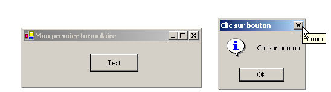
编译并执行该类：
dos>vbc /r:system.dll /r:system.drawing.dll /r:system.windows.forms.dll frm2.vb
Compilateur Microsoft (R) Visual Basic .NET version 7.10.3052.4
dos>frm2
类 MessageBox 用于在窗口中显示消息。此处我们使用了构造函数
Overloads Public Shared Function Show(ByVal owner As IWin32Window,ByVal text As String,ByVal caption As String,ByVal buttons As MessageBoxButtons,ByVal icon As MessageBoxIcon) As DialogResult
text | 要显示的消息 |
caption | 窗口标题 |
buttons | 窗口中的按钮 |
icon | 窗口中的图标 |
参数 buttons 的取值范围包括以下常量：
常量 | 按钮 |
 | |
 | |
 | |
 | |
 | |
 |
参数 icon 的取值范围包括以下常量：
 | 同上 停止 | ||
同上 警告 |  | ||
同上 Asterisk |  | ||
 | 同上 Hand | ||
 |
方法 Show 是一个静态方法，返回类型为 System.Windows.Forms.DialogResult，该类型是一个枚举：
public enum System.Windows.Forms.DialogResult
{
Abort = 0x00000003,
Cancel = 0x00000002,
Ignore = 0x00000005,
No = 0x00000007,
None = 0x00000000,
OK = 0x00000001,
Retry = 0x00000004,
Yes = 0x00000006,
}
若要了解用户点击了哪个按钮来关闭类型为 MessageBox 的窗口，可编写如下代码：
5.2. 使用 Visual Studio.NET 构建图形界面
我们将回顾之前看到的一些示例，并使用 Visual Studio.NET 进行构建。
5.2.1. 初始创建项目
- 启动 VS.NET 并选择选项 Fichier/Nouveau/Projet

- 输入您的项目参数
 |
- 选择要构建的项目类型，此处为 VB.NET 项目 (1)
- 选择您要构建的应用程序类型，此处为 Windows 应用程序 (2)
- 指定要放置项目子文件夹的目录 (3)
- 输入项目名称（4）。该名称也将作为存放项目文件的文件夹名称
- 该文件夹的名称显示在 (5) 处
- 随后，在 i4 文件夹下将生成若干文件夹和文件：
项目1文件夹下的子文件夹  |
在这些文件中，只有一个值得关注，即文件 form1.cs，它是与 VS.NET 创建的表单关联的源文件。我们稍后会再讨论这一点。
5.2.2. VS.NET 界面窗口
VS.NET 的界面现在显示了我们 i4 项目中的某些元素：
我们有一个图形用户界面设计窗口：
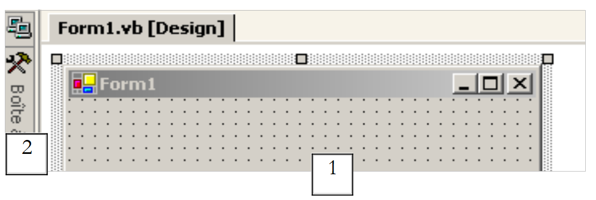 |
通过从工具栏（工具箱 2）中选取控件并将其拖放到窗口区域（1）上，我们可以构建图形用户界面。如果将鼠标移至“工具箱”上，它会放大并显示出若干控件：

目前，我们尚未使用其中任何一个控件。在 VS.NET 屏幕上，我们可以看到“解决方案资源管理器”（Explorer Solution）窗口：

起初，我们很少会用到这个窗口。它显示了构成该项目的所有文件。其中只有一个文件与我们相关：即我们程序的源文件，此处为 Form1.vb。 右键单击 Form1.vb，将弹出一个菜单，通过该菜单可以访问图形界面的源代码（“显示代码”），或者直接访问图形界面本身（“视图设计器”）：

也可以直接从“解决方案资源管理器”窗口访问这两个实体：
 |  |
打开的窗口会在主设计窗口中“堆叠”起来：

此处 Form1.vb[Design] 代表设计窗口，Form1.vb 代表代码窗口。只需点击其中一个标签页即可在两个窗口之间切换。 VS.NET 界面中另一个重要的窗口是属性窗口：

该窗口中显示的属性属于当前在图形设计窗口中选中的控件。可通过 Affichage 菜单访问项目的不同窗口：

其中包含上述主要窗口及其快捷键。
5.2.3. 运行项目
尽管我们尚未编写任何代码，但已拥有一个可执行的项目。执行 F5 或 Déboguer/Démarrer 即可运行该项目。此时将显示以下窗口：

该窗口可以最大化、最小化、调整大小以及关闭。
5.2.4. 由 VS.NET 生成的代码
让我们查看应用程序的代码（Affichage/Code）：
Public Class Form1
Inherits System.Windows.Forms.Form
#区域“由 Windows Form 设计器生成的代码”
Public Sub New()
MyBase.New()
'此调用由 Windows Form 设计器要求。
InitializeComponent()
'在调用 InitializeComponent() 之后添加任意初始化代码
End Sub
'该方法通过释放窗体来清理组件列表。
Protected Overloads Overrides Sub Dispose(ByVal disposing As Boolean)
If disposing Then
If Not (components Is Nothing) Then
components.Dispose()
End If
End If
MyBase.Dispose(disposing)
End Sub
'Windows Form 设计器要求
Private components As System.ComponentModel.IContainer
'REMARQUE：Windows Form 设计器要求执行以下过程
'可以使用 Windows 窗体设计器对其进行修改。
'请勿使用代码编辑器对其进行修改。
<System.Diagnostics.DebuggerStepThrough()> Private Sub InitializeComponent()
components = New System.ComponentModel.Container()
Me.Text = "Form2"
End Sub
#结束区域
End Class
图形用户界面继承自基类 System.Windows.Forms.Form：
基类 Form 定义了一个基础窗口，包含关闭按钮、最大化/最小化按钮、可调整大小等功能，并管理这些图形对象的事件。表单构造函数使用方法 InitializeComponent，其中创建并初始化了表单控件。
Public Sub New()
MyBase.New()
'Windows Form 设计器要求调用此方法。
InitializeComponent()
'在调用 InitializeComponent() 之后添加任意初始化代码
End Sub
在调用 InitializeComponent 之后，可以在生成器中执行其他任何工作。方法 InitializeComponent
Private Sub InitializeComponent()
'
'Form1
'
Me.AutoScaleBaseSize = New System.Drawing.Size(5, 13)
Me.ClientSize = New System.Drawing.Size(292, 53)
Me.Name = "Form1"
Me.Text = "Form1"
End Sub
设置窗口“Form1”的标题、宽度（292）和高度（53）。窗口标题由属性 Text 确定，尺寸由属性 Size 确定。 Size 定义在命名空间 System.Drawing 中，且为结构体。要运行此应用程序，我们需要定义项目的主模块。为此，我们使用选项 [Projets/Propriétés]：
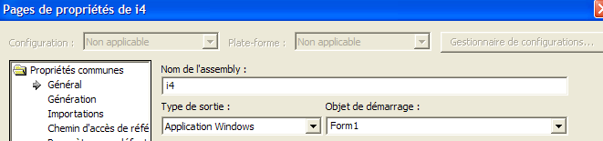
在 [Objet de démarrage] 中，我们指定了 [Form1]，即我们刚刚创建的表单。要启动执行，我们使用选项 [Déboguer/Démarrer]：

5.2.5. 在 DOS 窗口中编译
现在，让我们尝试在 DOS 窗口中编译并运行该应用程序：
dos>dir form1.vb
14/03/2004 11:53 514 Form1.vb
dos>vbc /r:system.dll /r:system.windows.forms.dll form1.vb
vbc : error BC30420: 'Sub Main' est introuvable dans 'Form1'.
编译器提示找不到过程 [Main]。确实，VS.NET 并未生成该过程。不过，我们在之前的示例中已经遇到过它。它的形式如下：
Shared Sub Main()
' 启动应用程序
Application.Run(New Form1) ' où Form1 est le formulaire
End Sub
让我们在 [Form1.vb] 的代码中添加上述代码，然后重新编译：
dos>vbc /r:system.dll /r:system.windows.forms.dll form2.vb
Compilateur Microsoft (R) Visual Basic .NET version 7.10.3052.4
Form2.vb(41) : error BC30451: Le nom 'Application' n'est pas déclaré.
Application.Run(New Form2)
~~~~~~~~~~~
这次，名称 [Application] 未被识别。这仅仅意味着我们尚未导入其命名空间 [System.Windows.Forms]。让我们添加以下语句：
然后重新编译：
这次成功了。运行：
创建并显示了一个类型为 Form1 的表单。如果该类继承自 System.Windows.Form，则可以通过使用编译器的 /m 选项来指定要执行的类，从而避免添加 [Main] 过程：
选项 /m:form2 表示要执行的类是名称为 [form2] 的类。
5.2.6. 事件处理
表单显示后，应用程序会监听表单上发生的事件（点击、鼠标移动等），并执行表单所处理的事件。 在此，我们的表单除了由基类 Form 处理的事件（关闭按钮点击、最大化/最小化、窗口大小调整、窗口移动等）之外，不处理其他事件。 生成的表单使用了一个 components 属性，但该属性在任何地方都没有被使用。 方法 dispose 在此处同样毫无用处。所使用的某些命名空间（Collections、ComponentModel、Data）以及为项目定义的命名空间 projet1 也是如此。因此，在此示例中，代码可简化为以下形式：
Imports System
Imports System.Drawing
Imports System.Windows.Forms
Public Class Form1
Inherits System.Windows.Forms.Form
' 构造函数
Public Sub New()
' 构建包含组件的表单
InitializeComponent()
End Sub
Private Sub InitializeComponent()
' 窗口大小
Me.Size = New System.Drawing.Size(300, 300)
' 窗口标题
Me.Text = "Form1"
End Sub
Shared Sub Main()
' 启动应用程序
Application.Run(New Form1)
End Sub
End Class
5.2.7. 结论
现在我们将直接采用 VS.NET 生成的代码，仅需添加我们自己的代码，特别是用于处理表单中各个控件相关的事件。
5.3. 包含输入框、按钮和标签的窗口
5.3.1. 界面设计
在上一个示例中，我们尚未在窗口中添加任何组件。我们将开始一个名为 interface2 的新项目。为此，我们将遵循之前说明的步骤来创建项目：

现在，让我们构建一个包含按钮、标签和输入框的窗口：
 |
字段如下：
编号 | 姓名 | 类型 | 角色 |
1 | lblSaisie | 标签 | 名称 |
2 | txtSaisie | TextBox | 输入框 |
3 | btnAfficher | 按钮 | 用于在对话框中显示输入框的内容txtSaisie |
可以按以下步骤构建此窗口：在窗口中任意组件外侧右键单击，选择选项 Properties 以访问窗口属性：

此时，属性窗口将显示在右侧：

其中部分属性值得注意：
用于设置窗口的背景颜色 | |
用于设置窗口中图形或文本的颜色 | |
为窗口关联菜单 | |
为窗口设置标题 | |
用于设置窗口类型 | |
用于设置窗口内文字的字体 | |
用于设置窗口名称 |
在此，我们设置属性 Text 和 Name：
输入框与按钮 - 1 | |
frmSaisiesBoutons |
使用“工具箱”栏
- 选择您需要的组件
- 将其拖放到窗口中并调整至合适尺寸
 |  |
在“工具箱”中选定组件后，按 “Esc”键隐藏工具栏，然后将 并调整组件大小。对三个组件均进行此操作 所需文件：Label、TextBox、Button。要对齐并 调整组件尺寸，请使用菜单 Format： |  |
格式设置的原理如下：
选项 Align 可用于对齐组件 | 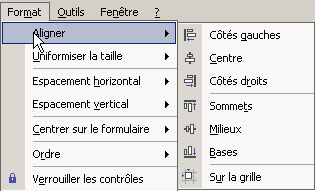 |
“Make Same Size”选项可使 组件具有相同的高度或 宽度： |  |
例如，“水平间距”选项可用于 将组件水平对齐， 。 “垂直间距”选项也可用于垂直对齐。 “Center in Form”选项可将 在窗口中水平或 垂直居中： |  |
将组件正确 放置在窗口中后，请设置其属性。 为此，请右键单击组件并 选择选项 Properties：
选中该组件以打开 打开其属性窗口。在该窗口中， 修改以下属性： name：lblSaisie，text：输入
选择该组件以打开其 属性窗口。在该窗口中，修改 以下属性： 名称：txtSaisie，文本：留空
name：cmdAfficher，text：显示
text：输入框与按钮 - 1 |  |
我们可以运行（Ctrl+F5）我们的项目 以初步预览 运行效果： | |
关闭该窗口。接下来我们需要编写与点击按钮相关的处理程序 Afficher。
5.3.2. 表单事件处理
让我们看看图形设计器生成的代码：
...
Public Class frmSaisiesBoutons
Inherits System.Windows.Forms.Form
' 组件
Private components As System.ComponentModel.Container = Nothing
Friend WithEvents btnAfficher As System.Windows.Forms.Button
Friend WithEvents lblsaisie As System.Windows.Forms.Label
Friend WithEvents txtsaisie As System.Windows.Forms.TextBox
' 构造函数
Public Sub New()
InitializeComponent()
End Sub
...
' 初始化组件
Private Sub InitializeComponent()
...
End Sub
End Class
首先需要注意组件的特殊声明：
- 关键字 Friend 表示该组件的可见性范围涵盖项目中的所有类
- 关键字 WithEvents 表示该组件会触发事件。接下来我们将探讨如何处理这些事件
请显示表单的代码窗口（视图/代码或 F7）：
 |
上图窗口中显示了两个下拉列表（1）和（2）。列表（1）是表单组件列表：

列表 (2) 显示与 (1) 中所选组件相关的事件列表：

与该组件关联的事件之一以粗体显示（此处为 Click）。这是该组件的默认事件。 要访问该特定事件的处理程序，可在设计窗口中双击该组件。VB.net 随后会在代码窗口中自动生成事件处理程序的骨架，并将光标定位在其上。 访问其他事件的处理程序则需在代码窗口中进行，具体操作是：在列表 (1) 中选择组件，并在 (2) 中选择事件。此时，VB.net 会生成事件处理程序的骨架，或者如果该骨架已生成，则将光标定位在其上：
Private Sub btnAfficher_Click(ByVal sender As System.Object, ByVal e As System.EventArgs) Handles btnAfficher.Click
...
End Sub
默认情况下，VB.net C_E 将组件 C 的事件 E 命名为事件处理程序。如果需要，可以更改此名称。但不建议这样做。 VB 开发者通常保留由 VB 生成的名称，以确保所有 VB 程序中命名的一致性。 将过程 btnAfficher_Click 与组件 btnAfficher 的 Click 事件关联时，并非通过过程名称，而是通过关键字 handles 实现：
Handles btnAfficher.Click
上文中的 handles 关键字指定该过程处理 btnAfficher 组件的 Click 事件。前面的事件处理程序有两个参数：
事件源对象（此处为按钮） | |
一个 EventArgs 对象，用于详细描述已发生的事件 |
此处我们将不使用这些参数。接下来只需完善代码即可。这里，我们希望显示一个对话框，其中包含字段 txtSaisie 的内容：
Private Sub btnAfficher_Click(ByVal sender As Object, ByVal e As System.EventArgs)
' 显示在输入框中输入的文本 TxtSaisie
MessageBox.Show("texte saisi= " + txtsaisie.Text, "Vérification de la saisie", MessageBoxButtons.OK, MessageBoxIcon.Information)
End Sub
若运行该应用程序，将得到以下结果：

5.3.3. 另一种处理事件的方法
对于按钮 btnAfficher，VS.NET 生成了以下代码：
Private Sub InitializeComponent()
...
'
'btnAfficher
'
Me.btnAfficher.Location = New System.Drawing.Point(102, 48)
Me.btnAfficher.Name = "btnAfficher"
Me.btnAfficher.Size = New System.Drawing.Size(88, 24)
Me.btnAfficher.TabIndex = 2
Me.btnAfficher.Text = "Afficher"
...
End Sub
...
' 事件管理器（点击按钮）cmdAfficher
Private Sub btnAfficher_Click(ByVal sender As System.Object, ByVal e As System.EventArgs) Handles btnAfficher.Click
...
End Sub
我们还可以通过另一种方式将过程 btnAfficher_Click 与按钮 btnAfficher 的 Click 事件关联：
Private Sub InitializeComponent()
...
'
'btnAfficher
'
Me.btnAfficher.Location = New System.Drawing.Point(102, 48)
Me.btnAfficher.Name = "btnAfficher"
Me.btnAfficher.Size = New System.Drawing.Size(88, 24)
Me.btnAfficher.TabIndex = 2
Me.btnAfficher.Text = "Afficher"
AddHandler btnAfficher.Click, AddressOf btnAfficher_Click
...
End Sub
...
' 按钮点击事件管理器 cmdAfficher
Private Sub btnAfficher_Click(ByVal sender As System.Object, ByVal e As System.EventArgs)
...
End Sub
过程 btnAfficher_Click 已失去 Handles 关键字，因此失去了与事件 btnAfficher.Click 的关联。该关联现通过关键字 AddHandler 建立：
AddHandler btnAfficher.Click, AddressOf btnAfficher_Click
上述代码将放置在表单的 InitializeComponent 过程内，它将名为 btnAfficher_Click 的过程与事件 btnAfficher.Click 关联起来。 此外，组件 btnAfficher 不再需要关键字 WithEvents：
Friend btnAfficher As System.Windows.Forms.Button
这两种方法有何区别？
- 关键字 handles 仅允许在设计阶段将事件与过程关联。设计者预先知道过程 P 需要处理事件 E1、E2 等，并编写代码
Private Sub btnAfficher_Click(ByVal sender As System.Object, ByVal e As System.EventArgs) handles E1, E2, ..., En
实际上，一个过程确实可以处理多个事件。
- 关键字 addhandler 允许在运行时将事件与过程关联。这在事件的生产者-消费者框架中非常有用。 某个对象生成一个可能引起其他对象关注的特定事件。这些对象向生成者订阅以接收该事件（例如，温度超过了临界阈值）。在应用程序的运行过程中，事件生成者将执行不同的指令：
其中 E 是生产者触发的事件，Pi 是属于该事件不同消费者对象的处理程序。我们将在后续章节中再次探讨事件的生产者-消费者应用。
5.3.4. 结论
通过研究这两个项目，我们可以得出结论：一旦使用 VS.NET 构建了图形界面，开发人员的工作就是编写用于管理该图形界面的事件处理程序。接下来我们将仅展示这些处理程序的代码。
5.4. 一些有用的组件
接下来，我们将介绍若干应用示例，这些示例运用了最常用的组件，以便大家了解这些组件的主要方法和属性。对于每个应用，我们将展示其图形用户界面以及关键代码，特别是事件处理程序。
5.4.1. Form表单
首先介绍一个不可或缺的组件——表单，其他组件将放置于此。我们之前已介绍过其部分基本属性。本文将重点探讨表单中的几个重要事件。
表单正在加载中 | |
表单正在关闭 | |
表单已关闭 |
事件 Load 甚至在表单显示之前就已发生。事件 Closing 发生在表单正在关闭时。此时仍可通过编程阻止该关闭操作。我们构建一个名为 Form1 且不含任何组件的表单：

我们处理上述三个事件：
Private Sub Form1_Load(ByVal sender As Object, ByVal e As System.EventArgs) Handles MyBase.Load
' 表单初始加载
MessageBox.Show("Evt Load", "Load")
End Sub
Private Sub Form1_Closing(ByVal sender As Object, ByVal e As System.ComponentModel.CancelEventArgs) Handles MyBase.Closing
' 表单正在关闭
MessageBox.Show("Evt Closing", "Closing")
' 请求确认
Dim réponse As DialogResult = MessageBox.Show("Voulez-vous vraiment quitter l'application", "Closing", MessageBoxButtons.YesNo, MessageBoxIcon.Question)
If réponse = DialogResult.No Then
e.Cancel = True
End If
End Sub
Private Sub Form1_Closed(ByVal sender As Object, ByVal e As System.EventArgs) Handles MyBase.Closed
' 表单正在关闭
MessageBox.Show("Evt Closed", "Closed")
End Sub
我们使用函数 MessageBox 来接收各种 事件。当用户 关闭窗口时触发。 |  |
此时我们会询问用户是否真的要退出应用程序： |  |
如果用户回答“否”，我们将该方法接收的参数 CancelEventArgs 的属性，该属性是方法接收的参数。 如果我们将该属性设置为 False，则 将取消，否则将继续： |  |
5.4.2. 标签控件和输入框 TextBox
我们之前已经遇到过这两个组件。Label 是一个文本组件，而 TextBox 是一个输入字段组件。它们的主要属性是 Text，该属性表示输入字段的内容或标签的文本。 该属性支持读写操作。通常用于 TextBox 的事件是 TextChanged，该事件会通知用户已修改输入字段。 以下是一个使用事件 TextChanged 来跟踪输入字段变化的示例：
 |
编号 | 类型 | 名称 | 角色 |
1 | TextBox | txtSaisie | 输入字段 |
2 | 标签 | lblControle | 实时显示1中的文本 |
3 | 按钮 | cmdEffacer | 用于清除字段1和2 |
4 | 按钮 | cmdQuitter | 用于退出应用程序 |
该应用程序的相关代码是事件处理程序：
' 点击“退出”按钮
Private Sub cmdQuitter_Click(ByVal sender As Object, ByVal e As System.EventArgs) _
Handles cmdQuitter.Click
' 点击“退出”按钮 - 退出应用程序
Application.Exit()
End Sub
' 修改字段 txtSaisie
Private Sub txtSaisie_TextChanged(ByVal sender As Object, ByVal e As System.EventArgs) _
Handles txtSaisie.TextChanged
' TextBox 的内容已更改 - 将其复制到标签 lblControle
lblControle.Text = txtSaisie.Text
End Sub
' 点击“清除”按钮
Private Sub cmdEffacer_Click(ByVal sender As Object, ByVal e As System.EventArgs) _
Handles cmdEffacer.Click
' 清空输入框内容
txtSaisie.Text = ""
End Sub
' 已按下一个键
Private Sub txtSaisie_KeyPress(ByVal sender As Object, ByVal e As System.Windows.Forms.KeyPressEventArgs) _
Handles txtSaisie.KeyPress
' 判断按下的键
Dim touche As Char = e.KeyChar
If touche = ControlChars.Cr Then
MessageBox.Show(txtSaisie.Text, "Contrôle", MessageBoxButtons.OK, MessageBoxIcon.Information)
e.Handled = True
End If
End Sub
请注意在 cmdQuitter_Click 过程中的应用程序结束方式：Application.Exit()。以下示例使用了一个多行 TextBox：
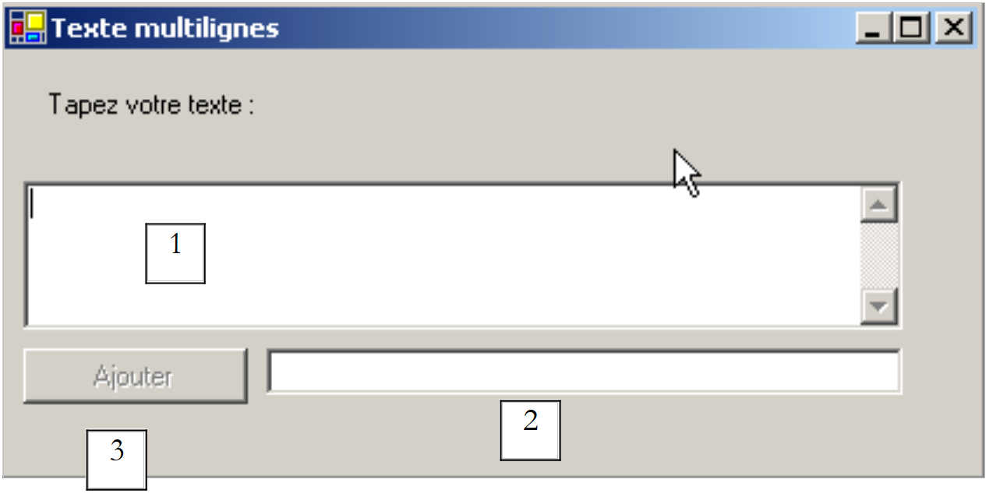 |
控件列表如下：
编号 | 类型 | 名称 | 作用 |
1 | TextBox | txtMultiLignes | 多行输入框 |
2 | TextBox | txtAjout | 单行输入框 |
3 | 按钮 | btnAjouter | 将内容从第2行添加到第1行 |
要使 TextBox 控件支持多行输入，需设置以下属性：
以支持多行文本 | |
用于设置控件是否显示滚动条（Horizontal、Vertical、Both）或不显示（None） | |
若设置为 true，按回车键将换行 | |
若为 true，Tab 键将在文本中生成制表符 |
有用的代码是处理按钮点击的代码 [Ajouter] 以及处理输入字段更改的代码 [txtAjout]：
' 可能 btnAjouter_Click
Private Sub btnAjouter_Click1(ByVal sender As Object, ByVal e As System.EventArgs) _
Handles btnAjouter.Click
' 将 txtAjout 的内容添加到 txtMultilignes 的内容中
txtMultilignes.Text &= txtAjout.Text
txtAjout.Text = ""
End Sub
' evt txtAjout_TextChanged
Private Sub txtAjout_TextChanged1(ByVal sender As Object, ByVal e As System.EventArgs) _
Handles txtAjout.TextChanged
' 设置“添加”按钮的状态
btnAjouter.Enabled = txtAjout.Text.Trim() <> ""
End Sub
5.4.3. 下拉列表 ComboBox
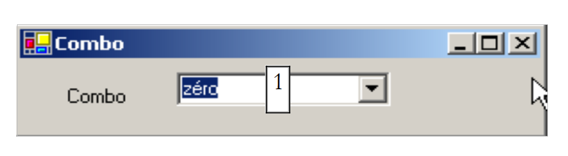 |  |
ComboBox 组件是一个带有输入框的下拉列表：用户既可以在 (2) 中选择一个项目，也可以在 (1) 中输入文本。ComboBox 组件有三种类型，由 Style 属性确定：
带编辑框的非下拉列表 | |
带编辑区的下拉列表 | |
无编辑区域的下拉列表 |
默认情况下，ComboBox 的类型为 DropDown。 要了解 ComboBox 类，请在帮助索引（Aide/Index）中输入 ComboBox。ComboBox 类只有一个构造函数：
Public Sub New() | 创建一个空的 ComboBox 对象 |
ComboBox 的元素可在 Items 属性中获取：
这是一个索引属性，Items(i) 表示下拉列表的第 i 个元素。假设 C 是一个下拉列表，C.Items 是其元素列表。我们有以下属性：
下拉列表的项数 | |
下拉列表的第 i 个选项 | |
将对象 o 添加为下拉列表的最后一个选项 | |
将一组对象添加到下拉列表末尾 | |
将对象 o 添加到下拉列表的第 i 个位置 | |
从下拉列表中移除第 i 个元素 | |
从下拉列表中移除对象 o | |
删除组合框中的所有元素 | |
将对象 o 设置为下拉列表中的第 i 个位置 |
人们可能会感到惊讶，下拉列表通常包含字符串，却也能包含对象。从视觉上来看，确实如此。如果一个 ComboBox 包含一个 obj 对象，它将显示字符串 obj.ToString（）。需要记住的是，每个对象都继承自 object 类的 ToString 方法，该方法会返回一个“代表”该对象的字符串。 在组合框 C 中选中的元素是 C.SelectedItem 或 C.Items(C.SelectedIndex)，其中 C.SelectedIndex 是所选元素的编号， 该编号从第一个元素的 0 开始。
在下拉列表中选择项目时，会触发事件 SelectedIndexChanged，该事件可用于监听下拉列表中选项的变更。在下面的应用程序中，我们将利用此事件来显示列表中被选中的项目。

此处仅展示窗口的相关代码。在表单构造函数中，我们为下拉列表设置数据：
Public Sub New()
' 创建表单
InitializeComponent()
' 填充下拉列表
cmbNombres.Items.AddRange(New String() {"zéro", "un", "deux", "trois", "quatre"})
' 选择列表中的第一个元素
cmbNombres.SelectedIndex = 0
End Sub
我们处理下拉列表的 SelectedIndexChanged 事件，该事件表示选中了新项目：
Private Sub cmbNombres_SelectedIndexChanged(ByVal sender As Object, ByVal e As System.EventArgs) _
Handles cmbNombres.SelectedIndexChanged
' 所选项已更改 - 显示该项
MessageBox.Show("Elément sélectionné : (" & cmbNombres.SelectedItem.ToString & "," & cmbNombres.SelectedIndex & ")", "Combo", MessageBoxButtons.OK, MessageBoxIcon.Information)
End Sub
5.4.4. 组件 ListBox
我们计划构建以下接口：
 |
该窗口的组件如下：
编号 | 类型 | 名称 | 作用/属性 |
0 | 表单 | Form1 | 表单 - BorderStyle=FixedSingle |
1 | TextBox | txtSaisie | 输入框 |
2 | 按钮 | btnAjouter | 用于将输入字段 1 的内容添加到列表 3 中的按钮 |
3 | ListBox | listBox1 | 列表 1 |
4 | ListBox | listBox2 | 列表 2 |
5 | 按钮 | btn1TO2 | 将列表 1 中选中的项目转移到列表 2 |
6 | 按钮 | cmd2T0 | 执行相反操作 |
7 | 按钮 | btnEffacer1 | 清空列表 1 |
8 | 按钮 | btnEffacer2 | 清空列表 2 |
- 用户在字段 1 中输入文本。通过按钮 Ajouter (2) 将其添加到列表 1 中。此时输入字段 (1) 会被清空，用户可以添加新条目。
- 用户可通过在任一列表中选中要转移的条目，并点击相应的转移按钮 5 或 6，将条目从一个列表转移到另一个列表。被转移的条目将添加到目标列表的末尾，并从源列表中移除。
- 用户可以双击列表 1 中的某个项目。该项目将被转移到输入框中以便修改，并从列表 1 中移除。
按钮的启用状态遵循以下规则：
- 仅当输入框中存在非空文本时，Ajouter按钮才会点亮
- 仅当列表 1 中选中了某个项目时，从列表 1 传输到列表 2 的按钮 5 才会亮起
- 仅当列表 2 中选中了某个项目时，将列表 2 传输到列表 1 的按钮 6 才会亮起
- 仅当待清除的列表中包含项目时，用于清除列表1和列表2的按钮7和8才会点亮。
在上述条件下，应用程序启动时所有按钮均应处于熄灭状态。此时需将按钮的 Enabled 属性设置为 false。 这可以在设计时完成，这样会自动在 InitializeComponent 方法中生成相应的代码；或者像下面这样在构造函数中自行实现：
Public Sub New()
' 表单初始化
InitializeComponent()
' 补充初始化
' 禁用若干按钮
btnAjouter.Enabled = False
btn1TO2.Enabled = False
btn2TO1.Enabled = False
btnEffacer1.Enabled = False
btnEffacer2.Enabled = False
End Sub
按钮 Ajouter 的状态由输入字段的内容控制。通过事件 TextChanged，我们可以跟踪该内容的变更：
' 文本输入字段发生变化
Private Sub txtSaisie_TextChanged(ByVal sender As Object, ByVal e As System.EventArgs) _
Handles txtSaisie.TextChanged
' txtSaisie 的内容已更改
' “添加”按钮仅在输入内容不为空时才处于激活状态
btnAjouter.Enabled = txtSaisie.Text.Trim() <> ""
End Sub
传输按钮的状态取决于其所控制的列表中是否选中了某项：
' 在无 listbox1 的情况下修改所选元素
Private Sub listBox1_SelectedIndexChanged(ByVal sender As Object, ByVal e As System.EventArgs) _
Handles listBox1.SelectedIndexChanged
' 已选中一个元素
' 启用从 1 到 2 的传输按钮
btn1TO2.Enabled = True
End Sub
' 在不使用列表框2的情况下更改所选元素
Private Sub listBox2_SelectedIndexChanged(ByVal sender As Object, ByVal e As System.EventArgs) _
Handles listBox2.SelectedIndexChanged
' 已选中一个元素
' 启用从2转至1的按钮
btn2TO1.Enabled = True
End Sub
点击按钮 Ajouter 时触发的代码如下：
' 点击“添加”按钮
Private Sub btnAjouter_Click(ByVal sender As Object, ByVal e As System.EventArgs) _
Handles btnAjouter.Click
' 在列表1中添加新元素
listBox1.Items.Add(txtSaisie.Text.Trim())
' 清空输入内容
txtSaisie.Text = ""
' 列表 1 不为空
btnEffacer1.Enabled = True
' 焦点返回输入框
txtSaisie.Focus()
End Sub
值得注意的是 Focus 方法，它允许将“焦点”置于表单控件上。点击按钮 Effacer 时关联的代码如下：
' 点击“清除1”按钮
Private Sub btnEffacer1_Click(ByVal sender As Object, ByVal e As System.EventArgs) _
Handles btnEffacer1.Click
' 清空列表1
listBox1.Items.Clear()
btnEffacer1.Enabled = False
End Sub
' 点击“清除2”按钮
Private Sub btnEffacer2_Click(ByVal sender As Object, ByVal e As System.EventArgs)
' 清空列表 2
listBox2.Items.Clear()
btnEffacer2.Enabled = False
End Sub
将选定列表中的元素转移到另一个列表的代码：
' 点击按钮btn1to2
Private Sub btn1TO2_Click(ByVal sender As Object, ByVal e As System.EventArgs) _
Handles btn1TO2.Click
' 将列表1中选中的项目转移到列表2
transfert(listBox1, listBox2)
' “清除”按钮
btnEffacer2.Enabled = True
btnEffacer1.Enabled = listBox1.Items.Count <> 0
' 转移按钮
btn1TO2.Enabled = False
btn2TO1.Enabled = False
End Sub
' 点击btn2to1按钮
Private Sub btn2TO1_Click(ByVal sender As Object, ByVal e As System.EventArgs) _
Handles btn2TO1.Click
' 将列表 2 中选中的项目转移到列表 1
transfert(listBox2, listBox1)
' “清除”按钮
btnEffacer1.Enabled = True
btnEffacer2.Enabled = listBox2.Items.Count <> 0
' 转移按钮
btn1TO2.Enabled = False
btn2TO1.Enabled = False
End Sub
' 转移
Private Sub transfert(ByVal l1 As ListBox, ByVal l2 As ListBox)
' 将列表 1 中选中的项目转移到列表 2
' 选中一个项目？
If l1.SelectedIndex = -1 Then Return
' 添加到 l2
l2.Items.Add(l1.SelectedItem)
' 在l1中删除
l1.Items.RemoveAt(l1.SelectedIndex)
End Sub
首先，我们创建一个方法
Private Sub transfert(ByVal l1 As ListBox, ByVal l2 As ListBox)
该方法将列表 l1 中选中的元素转移到列表 l2 中。 这样，我们将从两个方法简化为一个方法，即可将 listBox1 中的元素转移到 listBox2，或从 listBox2 转移到 listBox1。 在进行转移之前，请确保在列表 l1 中确实选中了一个元素：
' 选中了一个元素？
If l1.SelectedIndex = -1 Then Return
如果当前未选中任何元素，则 SelectedIndex 的值为 -1。在以下过程
Private Sub btnXTOY_Click(ByVal sender As Object, ByVal e As System.EventArgs) _
Handles btnXTOY.Click
中，将列表 X 转移到列表 Y，并更改某些按钮的状态以反映列表的新状态。
5.4.5. 复选框 CheckBox，单选按钮 ButtonRadio
我们计划编写以下应用程序：
 |
窗口的组件如下：
编号 | 类型 | 名称 | 作用 |
1 | RadioButton | radioButton1 radioButton2 radioButton3 | 3 个单选按钮 |
2 | CheckBox | chechBox1 chechBox2 chechBox3 | 3 个复选框 |
3 | ListBox | lstValeurs | 一个列表 |
如果将这三个单选按钮依次创建，它们默认属于同一个组。因此，当其中一个被选中时，其他两个则不会被选中。对于这六个控件，我们关注的事件是 CheckChanged 事件，该事件表示复选框或单选按钮的状态发生了变化。 这两种情况的状态均由布尔属性 Check 表示，当该属性为 true 时，表示控件已被选中。在此，我们使用了一个方法来处理这六个 CheckChanged 事件，即方法 affiche：
' 显示
Private Sub affiche(ByVal sender As Object, ByVal e As System.EventArgs) _
Handles checkBox1.CheckedChanged, checkBox2.CheckedChanged, checkBox3.CheckedChanged, _
radioButton1.CheckedChanged, radioButton2.CheckedChanged, radioButton3.CheckedChanged
' 显示单选按钮或复选框的状态
' 这是复选框吗？
If (TypeOf (sender) Is CheckBox) Then
Dim chk As CheckBox = CType(sender, CheckBox)
lstValeurs.Items.Insert(0, chk.Name & "=" & chk.Checked)
End If
' 这是单选按钮吗？
If (TypeOf (sender) Is RadioButton) Then
Dim rdb As RadioButton = CType(sender, RadioButton)
lstValeurs.Items.Insert(0, rdb.Name & "=" & rdb.Checked)
End If
End Sub
语法 TypeOf (sender) Is CheckBox 可用于验证对象 sender 是否属于类型 CheckBox。 这使我们能够将其转换为确切的 sender 类型。 方法 affiche 会在列表 lstValeurs 中写入触发该事件的组件名称及其属性 Checked 的值。 在运行时，可以看到单击单选按钮会触发两个 CheckChanged 事件：一个是旧的复选框从“已选中”变为“未选中”，另一个是新的复选框变为“已选中”。
5.4.6. 控件 ScrollBar
调节器有多种类型：水平调节器（hScrollBar）、 垂直调节器（vScrollBar）、增量器（NumericUpDown）。 |  |
让我们实现以下应用程序：
 |
编号 | 类型 | 名称 | 角色 |
1 | hScrollBar | hScrollBar1 | 一台水平变速器 |
2 | hScrollBar | hScrollBar2 | 一个水平调节器，其变化与调节器1同步 |
3 | TextBox | txtValeur | 显示水平调节器的数值 ReadOnly=true 以禁止任何输入 |
4 | NumericUpDown | 递增器 | 用于固定调节器 2 的数值 |
- ScrollBar 旋钮允许用户在整数值范围内选择一个值，该范围由旋钮上的“刻度带”表示，光标会在该刻度带上移动。旋钮的值可在其 Value 属性中获取。
- 对于水平滑块，左端代表范围的最小值，右端代表最大值，滑块指针代表当前选定的值。对于垂直滑块，顶端代表最小值，底端代表最大值。这些值由Minimum和Maximum属性表示，默认值分别为0和100。
- 点击滑块两端会使数值按点击端（默认值为1）的增量（正或负）发生变化，该增量参数名为SmallChange。
- 在滑块两侧点击会使数值以一个增量（正或负）变化，具体取决于点击的端点（称为 LargeChange），其默认值为 10。
- 当点击垂直滑块的上端时，其数值会减小。这可能会让普通用户感到意外，因为他们通常会预期数值“上升”。通过将属性 SmallChange 和 LargeChange 设置为负值，可以解决此问题
- 这五个属性（Value、Minimum、Maximum、SmallChange、LargeChange）支持读写操作。
- 变频器的主要事件是指示值发生变化的事件：Scroll事件。
一个名为 NumericUpDown 的组件位于变频器附近：它同样具有属性 Minimum、Maximum 和 Value，默认值分别为 0、100、0。 但在此处，属性 Value 显示在作为控件组成部分的输入框中。用户可以自行修改该值，除非将控件的属性 ReadOnly 设置为 true。 增量值由属性 Increment 确定，默认值为 1。组件 NumericUpDown 的主要事件是值发生变化时的触发事件：即事件 ValueChanged。我们应用程序的相关代码如下：
表单在构建时进行格式化：
' 构造函数
Public Sub New()
' 表单的初始创建
InitializeComponent()
' 将变频器2的参数设置为与变频器1相同
hScrollBar2.Minimum = hScrollBar1.Value
hScrollBar2.Minimum = hScrollBar1.Minimum
hScrollBar2.Maximum = hScrollBar1.Maximum
hScrollBar2.LargeChange = hScrollBar1.LargeChange
hScrollBar2.SmallChange = hScrollBar1.SmallChange
' 增量器亦同
incrémenteur.Minimum = hScrollBar1.Value
incrémenteur.Minimum = hScrollBar1.Minimum
incrémenteur.Maximum = hScrollBar1.Maximum
incrémenteur.Increment = hScrollBar1.SmallChange
' 将变频器1的值赋予 TextBox
txtValeur.Text = "" & hScrollBar1.Value
End Sub
监控变频器 1 值变化的处理程序：
' hscrollbar1 变频器管理
Private Sub hScrollBar1_Scroll(ByVal sender As Object, ByVal e As System.Windows.Forms.ScrollEventArgs) _
Handles hScrollBar1.Scroll
' 变频器1的值发生变化
' 将其值同步到调节器 2 和文本框 TxtValeur
hScrollBar2.Value = hScrollBar1.Value
txtValeur.Text = "" & hScrollBar1.Value
End Sub
跟踪变频器2值变化的处理程序：
' hscrollbar2 滑块管理
Private Sub hScrollBar2_Scroll(ByVal sender As Object, ByVal e As System.Windows.Forms.ScrollEventArgs) _
Handles hScrollBar2.Scroll
' 禁止调节器2的任何更改
' 强制其保持变频器1的数值
e.NewValue = hScrollBar1.Value
End Sub
跟踪控制值变化的管理器 incrémenteur：
' 增量器管理
Private Sub incrémenteur_ValueChanged(ByVal sender As Object, ByVal e As System.EventArgs) _
Handles incrémenteur.ValueChanged
' 固定变频器2的值
hScrollBar2.Value = CType(incrémenteur.Value, Integer)
End Sub
5.5. 鼠标事件
在容器中绘图时，了解鼠标位置非常重要，例如在点击时显示一个点。鼠标的移动会在其移动的容器中触发事件。
 |  |
鼠标刚刚进入控件的范围 | |
鼠标刚刚离开控件区域 | |
鼠标在控件区域内移动 | |
点击鼠标左键 | |
释放鼠标左键 | |
用户将对象拖放到控件上 | |
用户拖拽对象进入控件区域 | |
用户拖动对象离开控件区域 | |
用户拖动对象时鼠标指针移至控件区域上方 |
以下是一个程序，可帮助您更好地理解各种鼠标事件在何时发生：
 |
编号 | 类型 | 名称 | 作用 |
1 | 标签 | lblPosition | 用于显示鼠标在表单1、列表2或按钮3中的位置 |
2 | ListBox | lstEvts | 显示除 MouseMove 以外的鼠标事件 |
3 | Button | btnEffacer | 用于清除 2 的内容 |
事件处理程序如下。为了跟踪鼠标在三个控件上的移动，只需编写一个处理程序：
' 事件 form1_mousemove
Private Sub Form1_MouseMove(ByVal sender As System.Object, ByVal e As System.Windows.Forms.MouseEventArgs) _
Handles MyBase.MouseMove, lstEvts.MouseMove, btnEffacer.MouseMove, lstEvts.MouseMove
' 鼠标移动 - 显示其坐标 (X,Y)
lblPosition.Text = "(" & e.X & "," & e.Y & ")"
End Sub
需要注意的是，每当鼠标进入某个控件的区域时，其坐标系都会发生变化。其原点 (0,0) 即为当前所在控件的左上角。因此，在运行时，当鼠标从表单移动到按钮上时，可以清楚地看到坐标的变化。 为了更直观地观察这些鼠标作用域的变化，可以使用控件的 Cursor 属性：

该属性用于设置鼠标进入控件区域时的光标样式。因此在本例中，我们为表单本身设置了默认光标，为列表 2 设置了“手”形光标，为按钮 3 设置了“无”光标，如下图所示。

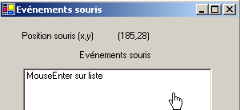

在方法 [InitializeComponent] 中，根据这些选择生成的代码如下：
Me.lstEvts.Cursor = System.Windows.Forms.Cursors.Hand
Me.btnEffacer.Cursor = System.Windows.Forms.Cursors.No
此外，为了检测列表 2 上的鼠标进出事件，我们处理该列表中的 MouseEnter 和 MouseLeave 事件：
' 事件 lstEvts_MouseEnter
Private Sub lstEvts_MouseEnter(ByVal sender As System.Object, ByVal e As System.EventArgs) _
Handles lstEvts.MouseEnter
affiche("MouseEnter sur liste")
End Sub
' 事件 lstEvts_MouseLeave
Private Sub lstEvts_MouseLeave(ByVal sender As System.Object, ByVal e As System.EventArgs) _
Handles lstEvts.MouseLeave
affiche("MouseLeave sur liste")
End Sub
' 显示
Private Sub affiche(ByVal message As String)
' 在事件列表顶部显示该消息
lstEvts.Items.Insert(0, message)
End Sub
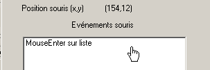
为了处理表单上的点击，我们处理事件 MouseDown 和 MouseUp：
' 事件 Form1_MouseDown
Private Sub Form1_MouseDown(ByVal sender As System.Object, ByVal e As System.Windows.Forms.MouseEventArgs) _
Handles MyBase.MouseDown
affiche("MouseDown sur formulaire")
End Sub
' 事件 Form1_MouseUp
Private Sub Form1_MouseUp(ByVal sender As System.Object, ByVal e As System.Windows.Forms.MouseEventArgs) _
Handles MyBase.MouseUp
affiche("MouseUp sur formulaire")
End Sub

最后，按钮点击处理程序的代码为 Effacer：
' 事件 btnEffacer_Click
Private Sub btnEffacer_Click(ByVal sender As System.Object, ByVal e As System.EventArgs) _
Handles btnEffacer.Click
' 清除事件列表
lstEvts.Items.Clear()
End Sub
5.6. 创建带菜单的窗口
现在让我们看看如何创建带菜单的窗口。我们将创建以下窗口：
 |
控件 1 是一个只读的 TextBox（ReadOnly=true），名称为 txtStatut。菜单的树形结构如下：
 |  |
菜单选项与其他可视化组件一样属于控件，具有属性与事件。例如，菜单选项 A1 的属性表如下：

本示例中使用了两个属性：
菜单控件的名称 | |
菜单选项的标签 |
本示例中各个菜单选项的属性如下：
Name | 文本 |
mnuA | 选项 A |
mnuA1 | A1 |
mnuA2 | A2 |
mnuA3 | A3 |
mnuB | 选项 B |
mnuB1 | B1 |
mnuSep1 | - (分隔符) |
mnuB2 | B2 |
mnuB3 | B3 |
mnuB31 | B31 |
mnuB32 | B32 |
要创建菜单，请在“ToolBox”栏中选择组件“MainMenu”：

此时，表单上将出现一个空菜单，其中包含标有“Type Here”的空白框。只需在此处输入菜单的各项选项即可：

若要在两个选项之间插入分隔符（如上文 B1 与 B2 之间），请将光标定位到菜单中需要插入分隔符的位置，右键点击并选择“插入分隔符”选项：

如果通过 Ctrl+F5 启动应用程序，会看到一个带有菜单的表单，目前该菜单尚无功能。菜单选项被视为组件：它们具有属性及事件。在 [fenêtre de code] 中，选择组件 mnuA1，然后选择相关的事件：

如果上面触发了事件 Click，则 VS.NET 会自动生成以下过程：
Private Sub mnuA1_Click(ByVal sender As Object, ByVal e As System.EventArgs) Handles mnuA.Click
....
End Sub
我们可以按照这种方式处理所有菜单选项。在此，所有选项均可使用相同的过程。因此，我们将前面的过程重命名为 affiche，并声明其管理的事件：
Private Sub affiche(ByVal sender As Object, ByVal e As System.EventArgs) _
Handles mnuA1.Click, mnuA2.Click, mnuB1.Click, mnuB2.Click, mnuB31.Click, mnuB32.Click
' 在 TextBox 中显示所选子菜单的名称
txtStatut.Text = (CType(sender, MenuItem)).Text
End Sub
在此方法中，我们仅需在事件源中显示菜单选项的属性 Text。事件源 sender 的类型为 object。 菜单选项的类型为 MenuItem，因此此处必须将 object 转换为 MenuItem。 运行应用程序并选择 A1 选项，将显示以下消息：

除了 affiche 方法的代码外，该应用程序中还有一段有用的代码，即在表单生成器中构建菜单的代码（InitializeComponent）：
Private Sub InitializeComponent()
Me.mainMenu1 = New System.Windows.Forms.MainMenu
Me.mnuA = New System.Windows.Forms.MenuItem
Me.mnuA1 = New System.Windows.Forms.MenuItem
Me.mnuA2 = New System.Windows.Forms.MenuItem
Me.mnuA3 = New System.Windows.Forms.MenuItem
Me.mnuB = New System.Windows.Forms.MenuItem
Me.mnuB1 = New System.Windows.Forms.MenuItem
Me.mnuB2 = New System.Windows.Forms.MenuItem
Me.mnuB3 = New System.Windows.Forms.MenuItem
Me.mnuB31 = New System.Windows.Forms.MenuItem
Me.mnuB32 = New System.Windows.Forms.MenuItem
Me.txtStatut = New System.Windows.Forms.TextBox
Me.mnuSep1 = New System.Windows.Forms.MenuItem
Me.SuspendLayout()
'
' mainMenu1
'
Me.mainMenu1.MenuItems.AddRange(New System.Windows.Forms.MenuItem() {Me.mnuA, Me.mnuB})
'
' mnuA
'
Me.mnuA.Index = 0
Me.mnuA.MenuItems.AddRange(New System.Windows.Forms.MenuItem() {Me.mnuA1, Me.mnuA2, Me.mnuA3})
Me.mnuA.Text = "Options A"
'
' mnuA1
'
Me.mnuA1.Index = 0
Me.mnuA1.Text = "A1"
'
' mnuA2
'
Me.mnuA2.Index = 1
Me.mnuA2.Text = "A2"
'
' mnuA3
'
Me.mnuA3.Index = 2
Me.mnuA3.Text = "A3"
'
' mnuB
'
Me.mnuB.Index = 1
Me.mnuB.MenuItems.AddRange(New System.Windows.Forms.MenuItem() {Me.mnuB1, Me.mnuSep1, Me.mnuB2, Me.mnuB3})
Me.mnuB.Text = "Options B"
'
' mnuB1
'
Me.mnuB1.Index = 0
Me.mnuB1.Text = "B1"
'
' mnuB2
'
Me.mnuB2.Index = 2
Me.mnuB2.Text = "B2"
'
' mnuB3
'
Me.mnuB3.Index = 3
Me.mnuB3.MenuItems.AddRange(New System.Windows.Forms.MenuItem() {Me.mnuB31, Me.mnuB32})
Me.mnuB3.Text = "B3"
'
' mnuB31
'
Me.mnuB31.Index = 0
Me.mnuB31.Text = "B31"
'
' mnuB32
'
Me.mnuB32.Index = 1
Me.mnuB32.Text = "B32"
'
' txtStatut
'
Me.txtStatut.Location = New System.Drawing.Point(8, 8)
Me.txtStatut.Name = "txtStatut"
Me.txtStatut.ReadOnly = True
Me.txtStatut.Size = New System.Drawing.Size(112, 20)
Me.txtStatut.TabIndex = 0
Me.txtStatut.Text = ""
'
' mnuSep1
'
Me.mnuSep1.Index = 1
Me.mnuSep1.Text = "-"
'
' Form1
'
Me.AutoScaleBaseSize = New System.Drawing.Size(5, 13)
Me.ClientSize = New System.Drawing.Size(136, 42)
Me.Controls.Add(txtStatut)
Me.Menu = Me.mainMenu1
Me.Name = "Form1"
Me.Text = "Menus"
Me.ResumeLayout(False)
End Sub
请注意将菜单与表单关联的语句：
Me.Menu = Me.mainMenu1
5.7. 非视觉组件
现在我们关注一些非视觉组件：它们在设计时会被使用，但在运行时不可见。
5.7.1. 对话框 OpenFileDialog 和 SaveFileDialog
我们将构建以下应用程序：
 |
控件如下：
编号 | 类型 | 名称 | 作用 |
1 | TextBox 多行 | txtTexte | 用户输入的文本或从文件中加载的文本 |
2 | 按钮 | btnSauvegarder | 用于将第1项的文本保存到文本文件中 |
3 | 按钮 | btnCharger | 用于将文本文件的内容加载到 1 中 |
4 | Button | btnEffacer | 清空 1 的内容 |
使用了两个非视觉控件：

当它们从“ToolBox”中提取并放置到表单上时，会被放置在表单底部的独立区域内。“Dialog”组件从“ToolBox”中提取：

按钮 Effacer 的代码很简单：
Private Sub btnEffacer_Click(ByVal sender As Object, ByVal e As System.EventArgs) _
Handles btnEffacer.Click
' 清空输入框
txtTexte.Text = ""
End Sub
类 SaveFileDialog 的定义如下：

它继承自多个类层级。在众多属性和方法中，我们将重点关注以下内容：
对话框中文件类型下拉列表中提供的文件类型 | |
上述列表中默认提供的文件类型编号。从 0 开始。 | |
初始显示用于保存文件的文件夹 | |
用户指定的备份文件名 | |
显示备份对话框的方法。返回类型为 DialogResult。 |
方法 ShowDialog 会显示如下所示的对话框：
 |
基于Filter属性构建的下拉列表。默认提供的文件类型由FilterIndex确定 | |
当前文件夹，若该属性已填写，则由 InitialDirectory 确定 | |
用户选择或直接输入的文件名。该名称将存储在属性 FileName 中 | |
“保存/取消”按钮。若使用按钮 Enregistrer，则函数 ShowDialog 返回结果 DialogResult.OK |
保存过程可编写如下：
Private Sub btnSauvegarder_Click(ByVal sender As Object, ByVal e As System.EventArgs) _
Handles btnSauvegarder.Click
' 将输入框保存到文本文件中
' 设置对话框savefileDialog1
saveFileDialog1.InitialDirectory = Application.ExecutablePath
saveFileDialog1.Filter = "Fichiers texte (*.txt)|*.txt|Tous les fichiers (*.*)|*.*"
saveFileDialog1.FilterIndex = 0
' 显示对话框并获取其结果
If saveFileDialog1.ShowDialog() = DialogResult.OK Then
' 获取文件名
Dim nomFichier As String = saveFileDialog1.FileName
Dim fichier As StreamWriter = Nothing
Try
' 以写入模式打开文件
fichier = New StreamWriter(nomFichier)
' 向其中写入文本
fichier.Write(txtTexte.Text)
Catch ex As Exception
' 问题
MessageBox.Show("Problème à l'écriture du fichier (" + ex.Message + ")", "Erreur", MessageBoxButtons.OK, MessageBoxIcon.Error)
Return
Finally
' 关闭文件
Try
fichier.Close()
Catch
End Try
End Try
End If
End Sub
- 将初始文件夹设置为包含应用程序可执行文件的文件夹：
- 指定要呈现的文件类型
请注意过滤器的语法：filter1|filter2|..|filtren，其中 filteri= 文本|文件模板。在此，用户可在 *.txt 和 *.* 文件之间进行选择。
- 在开头指定要显示的文件类型
在此，系统将首先向用户展示 *.txt 类型的文件。
- 显示对话框并获取其结果
If saveFileDialog1.ShowDialog() = DialogResult.OK Then
- 在对话框显示期间，用户无法访问主表单（即模态对话框）。用户设定要保存的文件名，并通过“保存”按钮、“取消”按钮或直接关闭对话框来退出。 只有当用户使用按钮 Enregistrer 退出对话框时，方法 ShowDialog 的结果才为 DialogResult.OK。
- 完成上述操作后，待创建文件的名称现已存储在 saveFileDialog1 对象的 FileName 属性中。 此时便回归到常规的文本文件创建流程。将 TextBox：txtTexte.Text 的内容写入其中，同时处理可能发生的异常。
类 OpenFileDialog 与类 SaveFileDialog 非常相似，并继承自同一类系。在这些属性和方法中，我们将重点关注以下内容：
对话框中文件类型下拉列表中提供的文件类型 | |
上述列表中默认提供的文件类型编号。从 0 开始。 | |
初始显示用于查找要打开文件的文件夹 | |
用户指定的待打开文件名 | |
显示保存对话框的方法。返回类型为 DialogResult。 |
方法 ShowDialog 会显示如下所示的对话框：
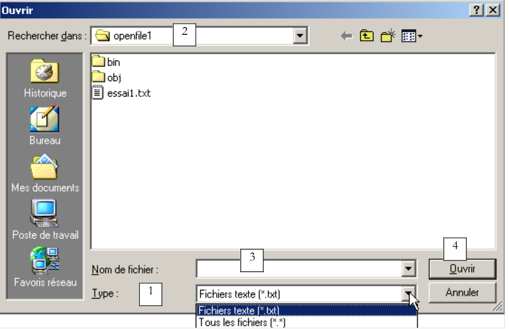 |
基于 Filter 属性构建的下拉列表。默认提供的文件类型由 FilterIndex 确定 | |
当前文件夹，若该属性已填写，则由 InitialDirectory 确定 | |
用户选择或直接输入的文件名。该名称将存储在属性 FileName 中 | |
“打开/取消”按钮。若使用 Ouvrir 按钮，则 ShowDialog 函数将返回结果 DialogResult.OK |
打开过程可编写如下：
Private Sub btnCharger_Click(ByVal sender As Object, ByVal e As System.EventArgs) _
Handles btnCharger.Click
' 将文本文件加载到输入框中
' 配置对话框 openfileDialog1
openFileDialog1.InitialDirectory = Application.ExecutablePath
openFileDialog1.Filter = "Fichiers texte (*.txt)|*.txt|Tous les fichiers (*.*)|*.*"
openFileDialog1.FilterIndex = 0
' 显示对话框并获取其结果
If openFileDialog1.ShowDialog() = DialogResult.OK Then
' 获取文件名
Dim nomFichier As String = openFileDialog1.FileName
Dim fichier As StreamReader = Nothing
Try
' 以只读模式打开文件
fichier = New StreamReader(nomFichier)
' 读取整个文件并将其放入 TextBox
txtTexte.Text = fichier.ReadToEnd()
Catch ex As Exception
' 问题
MessageBox.Show("Problème à la lecture du fichier (" + ex.Message + ")", "Erreur", MessageBoxButtons.OK, MessageBoxIcon.Error)
Return
Finally
' 关闭文件
Try
fichier.Close()
Catch
End Try
End Try
End If
End Sub
- 将初始目录设置为包含应用程序可执行文件的目录：
- 设置要显示的文件类型
- 设置开头要显示的文件类型
在此，将首先向用户显示 *.txt 类型的文件。
- 显示对话框并获取其结果
If openFileDialog1.ShowDialog() = DialogResult.OK Then
在对话框显示期间，用户无法访问主表单（即模态对话框）。用户指定要打开的文件名，然后通过“打开”按钮、“取消”按钮或直接关闭对话框来退出该对话框。 只有当用户使用按钮 Ouvrir 退出对话框时，方法 ShowDialog 的返回值才为 DialogResult.OK。
- 完成上述操作后，待创建文件的名称现已存储在 openFileDialog1 对象的 FileName 属性中。此时，操作将回归到常规的文本文件读取流程。请注意以下用于读取整个文件的方法：
- 文件内容被存入 TextBox 和 txtTexte 中。系统会处理可能发生的异常。
5.7.2. 对话框 FontColor 和 ColorDialog
我们延续前面的示例，引入两个新按钮：
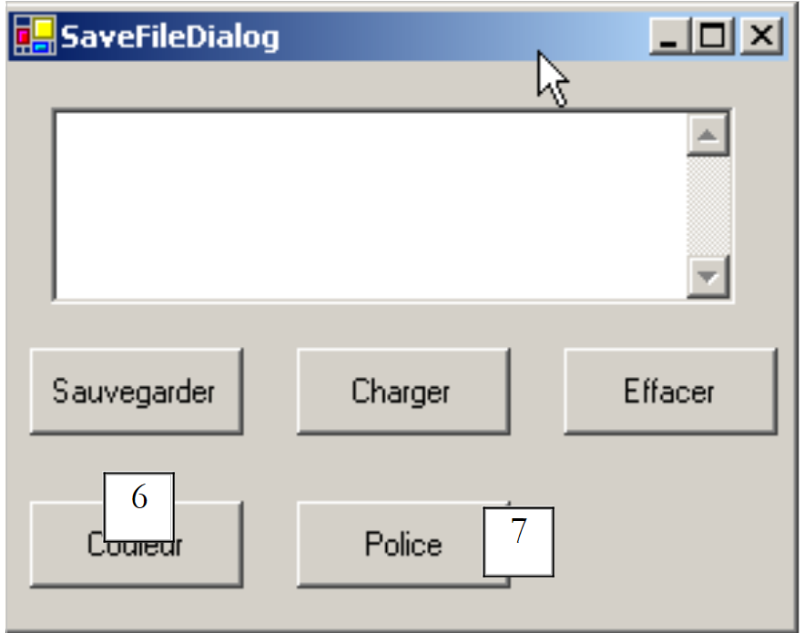 |
编号 | 类型 | 名称 | 作用 |
6 | 按钮 | btnCouleur | 用于设置 TextBox 的字符颜色 |
7 | Button | btnPolice | 用于设置 TextBox 的字体 |
我们在表单上添加一个 ColorDialog 控件和一个 FontDialog 控件：
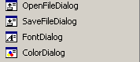
类 FontDialog 和 ColorDialog 具有方法 ShowDialog，该方法与类 OpenFileDialog 和 SaveFileDialog 类中的 ShowDialog 方法。ColorDialog 类的 ShowDialog 方法允许选择颜色：

如果用户通过 OK 按钮关闭对话框， 则方法 ShowDialog 的返回结果为 DialogResult.OK，所选颜色存储在所用对象 ColorDialog 的属性 Color 中。 FontDialog 类的 ShowDialog 方法用于选择字体：

如果用户通过 OK 按钮退出对话框， 则方法 ShowDialog 的结果为 DialogResult.OK，所选字体存储在所用对象 FontDialog 的属性 Font 中。 我们已准备好处理对按钮 Couleur 和 Police 的点击的代码：
Private Sub btnCouleur_Click(ByVal sender As Object, ByVal e As System.EventArgs) _
Handles btnCouleur.Click
' 选择文本颜色
If colorDialog1.ShowDialog() = DialogResult.OK Then
' 修改 TextBox 的 forecolor 属性
txtTexte.ForeColor = colorDialog1.Color
End If
End Sub
Private Sub btnPolice_Click(ByVal sender As Object, ByVal e As System.EventArgs) _
Handles btnPolice.Click
' 选择字体
If fontDialog1.ShowDialog() = DialogResult.OK Then
' 更改 TextBox 的 font 属性
txtTexte.Font = fontDialog1.Font
End If
End Sub
5.7.3. Timer
在此，我们计划编写以下应用程序：
 |
编号 | 类型 | 名称 | 角色 |
1 | TextBox, ReadOnly=true | txtChrono | 显示计时器 |
2 | 按钮 | btnArretMarche | 计时器停止/开始按钮 |
3 | 计时器 | timer1 | 此组件每秒触发一次事件 |
计时器已启动：

计时器已停止：

为了每秒更新 TextBox 和 txtChrono 的内容，我们需要一个每秒触发一次事件的组件，我们可以拦截该事件来更新计时器的显示。 该组件即为 Timer：

将该组件安装到表单上（位于非可视化组件部分）后，表单构造函数中会创建一个类型为 Timer 的对象。System.Windows.Forms.Timer 类的定义如下：
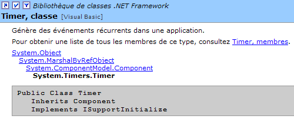
其属性中，我们仅关注以下几项：
经过多少毫秒后会触发 Tick 事件。 | |
在 Interval 毫秒结束时触发的事件 | |
将定时器设为活动状态（true）或非活动状态（false） |
在本例中，定时器名为 timer1，且 timer1.Interval 被设置为 1000 毫秒（1 秒）。因此，事件 Tick 将每秒触发一次。点击“停止/开始”按钮将由以下过程处理：
Private Sub btnArretMarche_Click(ByVal sender As Object, ByVal e As System.EventArgs) _
Handles btnArretMarche.Click
' 停止还是继续？
If btnArretMarche.Text = "Marche" Then
' 记录开始时间
début = DateTime.Now
' 显示
txtChrono.Text = "00:00:00"
' 启动计时器
timer1.Enabled = True
' 更改按钮的标签
btnArretMarche.Text = "Arrêt"
' 结束
Return
End If '
If btnArretMarche.Text = "Arrêt" Then
' 停止计时器
timer1.Enabled = False
' 更改按钮标签
btnArretMarche.Text = "Marche"
' 结束
Return
End If
End Sub
Private Sub timer1_Tick(ByVal sender As Object, ByVal e As System.EventArgs) _
Handles timer1.Tick
' 已过去一秒
Dim maintenant As DateTime = DateTime.Now
Dim durée As TimeSpan = DateTime.op_Subtraction(maintenant, début)
txtChrono.Text = "" + durée.Hours.ToString("d2") + ":" + durée.Minutes.ToString("d2") + ":" + durée.Seconds.ToString("d2")
End Sub
“停止/启动”按钮的标签要么是“停止”，要么是“启动”。因此必须对该标签进行判断以确定后续操作。
- 如果是“运行”，则将开始时间记录到表单对象的全局变量中，启动计时器（Enabled=true），并将按钮标签更改为“停止”。
- 如果是“停止”，则停止计时器（Enabled=false），并将按钮的标签更改为“开始”。
Public Class Timer1
Inherits System.Windows.Forms.Form
Private WithEvents timer1 As System.Windows.Forms.Timer
Private WithEvents btnArretMarche As System.Windows.Forms.Button
Private components As System.ComponentModel.IContainer
Private WithEvents txtChrono As System.Windows.Forms.TextBox
Private WithEvents label1 As System.Windows.Forms.Label
' 实例变量
Private début As DateTime
上述 début 属性在该类的所有方法中均被识别。接下来我们需要处理 timer1 对象上的 Tick 事件，该事件每秒触发一次：
Private Sub timer1_Tick(ByVal sender As Object, ByVal e As System.EventArgs) _
Handles timer1.Tick
' 已过去一秒
Dim maintenant As DateTime = DateTime.Now
Dim durée As TimeSpan = DateTime.op_Subtraction(maintenant, début)
txtChrono.Text = "" + durée.Hours.ToString("d2") + ":" + durée.Minutes.ToString("d2") + ":" + durée.Seconds.ToString("d2")
End Sub
计算自计时器启动时刻起经过的时间。 由此获得一个类型为 TimeSpan 的对象，该对象表示一段时长。该时长需以 hh:mm:ss 的格式在计时器中显示。为此，我们使用 TimeSPan 对象的属性 Hours、Minutes、 Seconds，它们分别表示时长中的小时、分钟和秒。我们将时长以 ToString("d2") 格式显示，以实现两位数显示。
5.8. 示例 IMPOTS
我们继续使用之前已处理过两次的应用程序 IMPOTS。现在，我们为其添加一个图形用户界面：
 |
控件如下
编号 | 类型 | 名称 | 角色 |
RadioButton | rdOui | 已婚请勾选 | |
RadioButton | rdNon | 未婚者请勾选 | |
NumericUpDown | incEnfants | 纳税人的子女数量 最小值=0，最大值=20，增量=1 | |
TextBox | txtSalaire | 纳税人年薪（单位：F） | |
TextBox | txtImpots | 应缴税额 ReadOnly=true | |
按钮 | btnCalculer | 开始计算税款 | |
按钮 | btnEffacer | 在加载时将表单恢复为初始状态 | |
按钮 | btnQuitter | 用于退出应用程序 |
操作规则
- 只要工资字段为空，“计算”按钮将保持不可用状态
- 如果计算开始后发现工资有误，系统将提示错误：
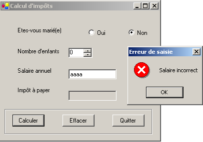
程序代码如下。它使用了在“类”一章中创建的类 impot。由 VS.NET 自动生成的部分代码在此未予复制。
using System;
using System.Drawing;
using System.Collections;
using System.ComponentModel;
using System.Windows.Forms;
using System.Data;
' 选项
Option Explicit On
Option Strict On
' 命名空间
Imports System
Imports System.Drawing
Imports System.Collections
Imports System.ComponentModel
Imports System.Windows.Forms
Imports System.Data
' 表单类
Public Class frmImpots
Inherits System.Windows.Forms.Form
Private WithEvents label1 As System.Windows.Forms.Label
Private WithEvents rdOui As System.Windows.Forms.RadioButton
Private WithEvents rdNon As System.Windows.Forms.RadioButton
Private WithEvents label2 As System.Windows.Forms.Label
Private WithEvents txtSalaire As System.Windows.Forms.TextBox
Private WithEvents label3 As System.Windows.Forms.Label
Private WithEvents label4 As System.Windows.Forms.Label
Private WithEvents groupBox1 As System.Windows.Forms.GroupBox
Private WithEvents btnCalculer As System.Windows.Forms.Button
Private WithEvents btnEffacer As System.Windows.Forms.Button
Private WithEvents btnQuitter As System.Windows.Forms.Button
Private WithEvents txtImpots As System.Windows.Forms.TextBox
Private components As System.ComponentModel.Container = Nothing
Private WithEvents incEnfants As System.Windows.Forms.NumericUpDown
' 计算税款所需的数据表
Private limites() As Decimal = {12620D, 13190D, 15640D, 24740D, 31810D, 39970D, 48360D, 55790D, 92970D, 127860D, 151250D, 172040D, 195000D, 0D}
Private coeffR() As Decimal = {0D, 0.05D, 0.1D, 0.15D, 0.2D, 0.25D, 0.3D, 0.35D, 0.4D, 0.45D, 0.55D, 0.5D, 0.6D, 0.65D}
Private coeffN() As Decimal = {0D, 631D, 1290.5D, 2072.5D, 3309.5D, 4900D, 6898.5D, 9316.5D, 12106D, 16754.5D, 23147.5D, 30710D, 39312D, 49062D}
' 税项对象
Private objImpôt As impot = Nothing
Public Sub New()
InitializeComponent()
' 表单初始化
btnEffacer_Click(Nothing, Nothing)
btnCalculer.Enabled = False
' 创建税务对象
Try
objImpôt = New impot(limites, coeffR, coeffN)
Catch ex As Exception
MessageBox.Show("Impossible de créer l'objet impôt (" + ex.Message + ")", "Erreur", MessageBoxButtons.OK, MessageBoxIcon.Error)
' 禁用工资输入字段
txtSalaire.Enabled = False
End Try 'try-catch
End Sub
Protected Overloads Sub Dispose(ByVal disposing As Boolean)
....
End Sub
Private Sub InitializeComponent()
Me.btnQuitter = New System.Windows.Forms.Button
Me.groupBox1 = New System.Windows.Forms.GroupBox
Me.btnEffacer = New System.Windows.Forms.Button
Me.btnCalculer = New System.Windows.Forms.Button
Me.txtSalaire = New System.Windows.Forms.TextBox
Me.label1 = New System.Windows.Forms.Label
Me.label2 = New System.Windows.Forms.Label
Me.label3 = New System.Windows.Forms.Label
Me.rdNon = New System.Windows.Forms.RadioButton
Me.txtImpots = New System.Windows.Forms.TextBox
Me.label4 = New System.Windows.Forms.Label
Me.rdOui = New System.Windows.Forms.RadioButton
Me.incEnfants = New System.Windows.Forms.NumericUpDown
Me.groupBox1.SuspendLayout()
CType(Me.incEnfants, System.ComponentModel.ISupportInitialize).BeginInit()
Me.SuspendLayout()
....
End Sub 'InitializeComponent
Public Shared Sub Main()
Application.Run(New frmImpots)
End Sub 'Main
Private Sub btnEffacer_Click(ByVal sender As Object, ByVal e As System.EventArgs) _
Handles btnEffacer.Click
' 清空表单
incEnfants.Value = 0
txtSalaire.Text = ""
txtImpots.Text = ""
rdNon.Checked = True
End Sub 'btnEffacer_Click
Private Sub txtSalaire_TextChanged(ByVal sender As Object, ByVal e As System.EventArgs) _
Handles txtSalaire.TextChanged
' “计算”按钮状态
btnCalculer.Enabled = txtSalaire.Text.Trim() <> ""
End Sub 'txtSalaire_TextChanged
Private Sub btnQuitter_Click(ByVal sender As Object, ByVal e As System.EventArgs) _
Handles btnQuitter.Click
' 应用程序结束
Application.Exit()
End Sub 'btnQuitter_Click
Private Sub btnCalculer_Click(ByVal sender As Object, ByVal e As System.EventArgs) _
Handles btnCalculer.Click
' 工资是否正确？
Dim intSalaire As Integer = 0
Try
' 获取工资
intSalaire = Integer.Parse(txtSalaire.Text)
' 必须大于等于0
If intSalaire < 0 Then
Throw New Exception("")
End If
Catch ex As Exception
' 错误信息
MessageBox.Show(Me, "Salaire incorrect", "Erreur de saisie", MessageBoxButtons.OK, MessageBoxIcon.Error)
' 焦点在错误字段上
txtSalaire.Focus()
' 选择输入字段中的文本
txtSalaire.SelectAll()
' 返回可视化界面
Return
End Try 'try-catch
' 工资正确 - 计算税款
txtImpots.Text = "" & CLng(objImpôt.calculer(rdOui.Checked, CInt(incEnfants.Value), intSalaire))
End Sub 'btnCalculer_Click
End Class
这里我们使用的是impots.dll汇编文件，它是第2章中impots类的编译结果。需要提醒的是，该汇编文件可以通过以下命令在控制台模式下生成
该命令会生成名为 impots.dll 的文件，即汇编文件。该汇编文件随后可在不同项目中使用。在此，在我们的 VS.NET 项目中，我们使用项目属性窗口：
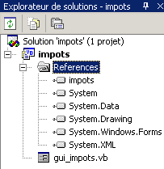
要添加引用（一个装配体），我们右键单击上方的“References”关键组，选择“[Ajouter une référence]”选项，并指定我们已预先放置在项目文件夹中的装配体 [impots.dll]：
dos>dir
01/03/2004 14:39 9 250 gui_impots.vb
01/03/2004 14:37 4 096 impots.dll
01/03/2004 14:41 12 288 gui_impots.exe
一旦将程序集 [impots.dll] 包含到项目中，类 [impots] 就会被项目识别。在此之前，它并未被识别。另一种方法是将源文件 impots.vb 包含到项目中。 为此，在项目属性窗口中，右键单击该项目，选择“[Ajouter/Ajouter un élément existant]”选项，并指定文件 impots.vb。